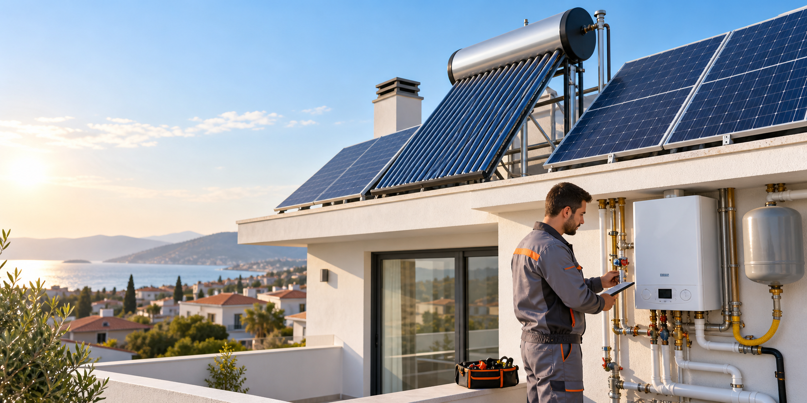
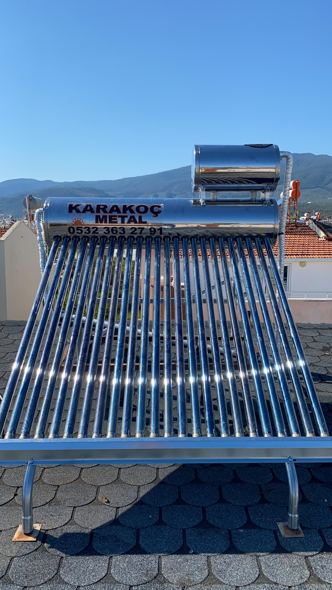
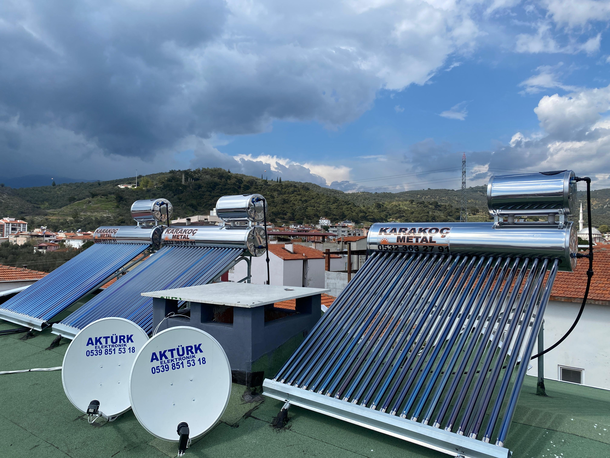

Güneş Enerjisi Sistemleri
Sıcak su ihtiyacınıza ve çatınıza uygun vakum tüplü sistemler.

ALTINOLUK'TA GÜNEŞ ENERJİSİ SİSTEMLERİ
Doğalgaz, su tesisatı, ısı pompası, kombi servis ve montaj. Eviniz ve iş yeriniz için keşiften kuruluma yanınızdayız.
HİZMETLER
Yerinde keşif, uygun ürün seçimi, temiz montaj ve servis desteği.
Sıcak su ihtiyacınıza ve çatınıza uygun vakum tüplü sistemler.
Ev, apartman ve iş yeri tesisatı için keşif ve uygulama.
Kombi servis ve montajı ile ısı pompası kurulum desteği.
REFERANSLAR



ÜCRETSİZ KEŞİF
Güneş enerjisi ve doğalgaz işleriniz için Altınoluk ve Edremit'de ücretsiz keşif.
İLETİŞİM
Keşif, ürün ve servis talepleriniz için doğrudan arayın.
Avcılar Mahallesi, Fener Sokak No: 4, Edremit/Balıkesir